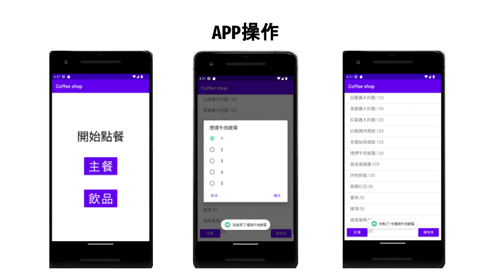
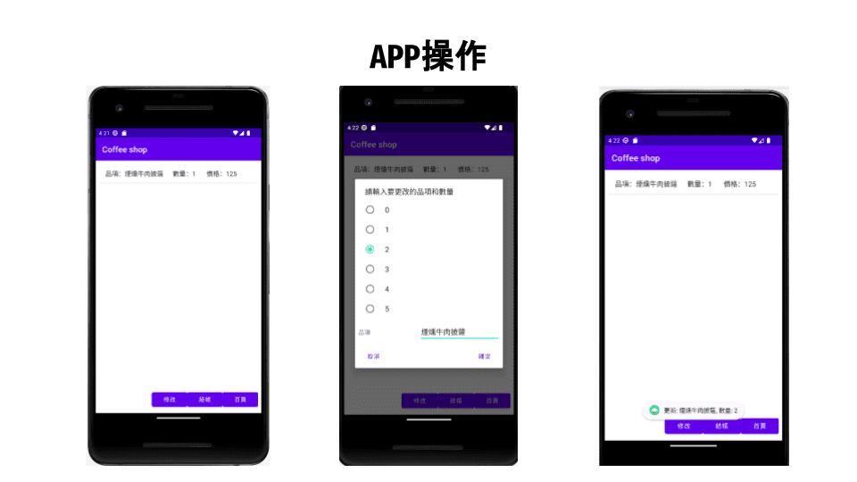

程式技能
C
90%
90%
Python
70%
70%
Java
70%
70%
HTML
80%
80%
CSS
60%
60%
打工經歷
超商門職（2020.8）
當時應徵的是一間尚未開幕的新店，所以參與了開店初期的準備事項，例如職員考試和商品陳列等等，透過這個機會學習到許多經營超商需要注意的細節。
早餐店門職（2022.9）
我在早餐店主要負責外場的大小事宜與飲品的製作，因此需要同時注意許多內外場之間協調的工作，例如是否有客人要點餐、是否有餐點被遺漏、是否有空桌需要整理等等。這個工作讓我意識到很多時候不能只專注於目前正在處理的事，同時也要注意周邊的狀況，才能確保流程順利。
補習班輔導老師（2023.2）
老師是我一直以來都很想嘗試的職業，對於我來說也是一個很大的挑戰。在補習班我學到了許多班級管理需要注意的事情，對於站在台上發言也沒有過去那麼緊張，對我而言是一個非常難得的經歷。
學習歷程
大一
在大一時，系上必修的計算機概論介紹介紹了電腦發展的歷史，課程中也安排了C語言的教學跟實作。除此以外，我還選修了人工智慧導論這門延伸通識，對於深度學習的方式有了初步的概念。
大二
經過大一相關課程的培訓，我對於資訊相關的課程越來越感興趣，在分組時也選擇資訊組作為我後續的修課方向。大二的課程安排了程式設計和資料結構，讓我對於編寫程式其中的邏輯有更多的了解。
大三
大三開始申請了輔系，除了本系的課程以外，也多了修習資管系課程的機會。因為系上的選修課程與輔系的原因，這個學年學習了許多不同的程式語言，而課程中的專案讓我更了解一個程式從構想到實作需要的程序。
專題成果
應數系系網翻新
大三時選修專題研究課程，當時準備以網頁的設計與製作為主題，正好遇到系上要翻新系網，與指導老師討論後，決定要以系網為專題主題。
雖然在這之前沒有接觸過網頁相關的製作，但因為系網製作是採用wordpress統一管理，相較於從底層程式碼開始更為容易上手。透過這個經驗，在真正學習HTML與CSS時，我更能想像我們寫下的程式碼可能會產出什麼樣的結果。
雖然在這之前沒有接觸過網頁相關的製作，但因為系網製作是採用wordpress統一管理，相較於從底層程式碼開始更為容易上手。透過這個經驗，在真正學習HTML與CSS時，我更能想像我們寫下的程式碼可能會產出什麼樣的結果。
Android程式設計期末專案


因為過去學習的程式語言主要是以C語言為主，實作方向也主要是教程式邏輯，所以安卓程式設計可以算是第一個接觸到與圖形介面相關的程式課程。
在製作期末專案的時候，我們也遇到許多問題，我們也做了許多嘗試以達到我們期望的功能，在反覆實驗的過程中，我們對於程式的編寫方式也有了更多了解。
在製作期末專案的時候，我們也遇到許多問題，我們也做了許多嘗試以達到我們期望的功能，在反覆實驗的過程中，我們對於程式的編寫方式也有了更多了解。
多媒體程式設計期末專案
這次的期末專案在分工過程中，為了大家可以順利協作，我們在一開始就對css的排版訂下規範，除了不同頁面會出現的個別項目以外，我們都統一寫在common.css這個檔案中，也在初期就先將class的名稱定好，因此我們在排版上沒有出現由不同人製作而出現不同效果的問題。
我們在製作專案的過程中，大家都各自發揮所長，在團隊協作中互相配合、互相交流技術，因此在合作過程中我也學到許多html不同的製作方式，在遇到問題時大家也會一起想辦法解決，在充分的討論下也激發了更多的靈感。
期末專案因為是與組員共同完成，其中需要許多溝通交流，製作一個完整的電商網站也是過去不曾嘗試過的，對我而言是一次難得的體驗。
我們在製作專案的過程中，大家都各自發揮所長，在團隊協作中互相配合、互相交流技術，因此在合作過程中我也學到許多html不同的製作方式，在遇到問題時大家也會一起想辦法解決，在充分的討論下也激發了更多的靈感。
期末專案因為是與組員共同完成，其中需要許多溝通交流，製作一個完整的電商網站也是過去不曾嘗試過的，對我而言是一次難得的體驗。